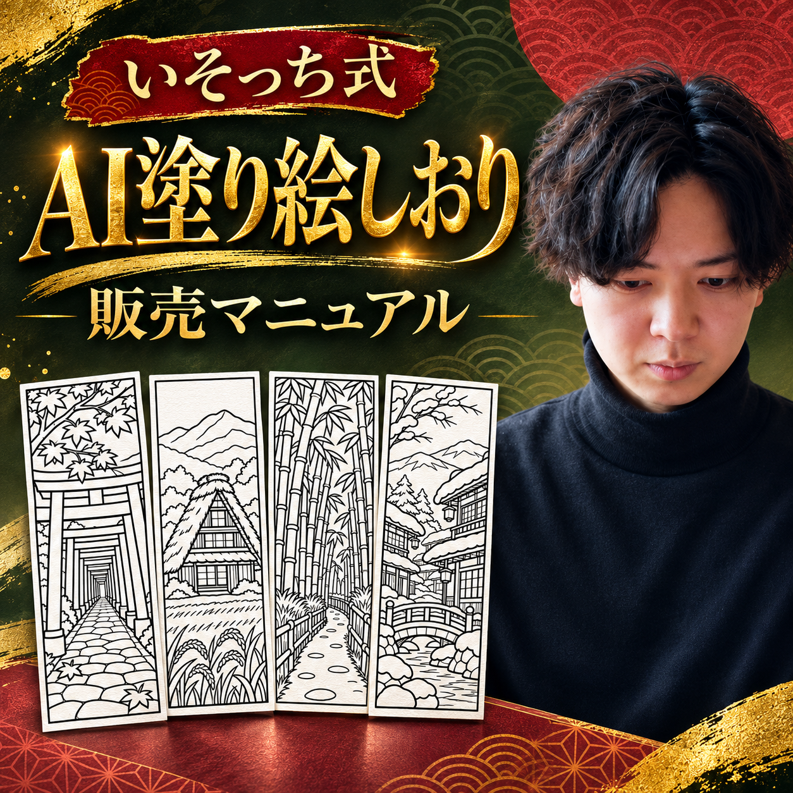
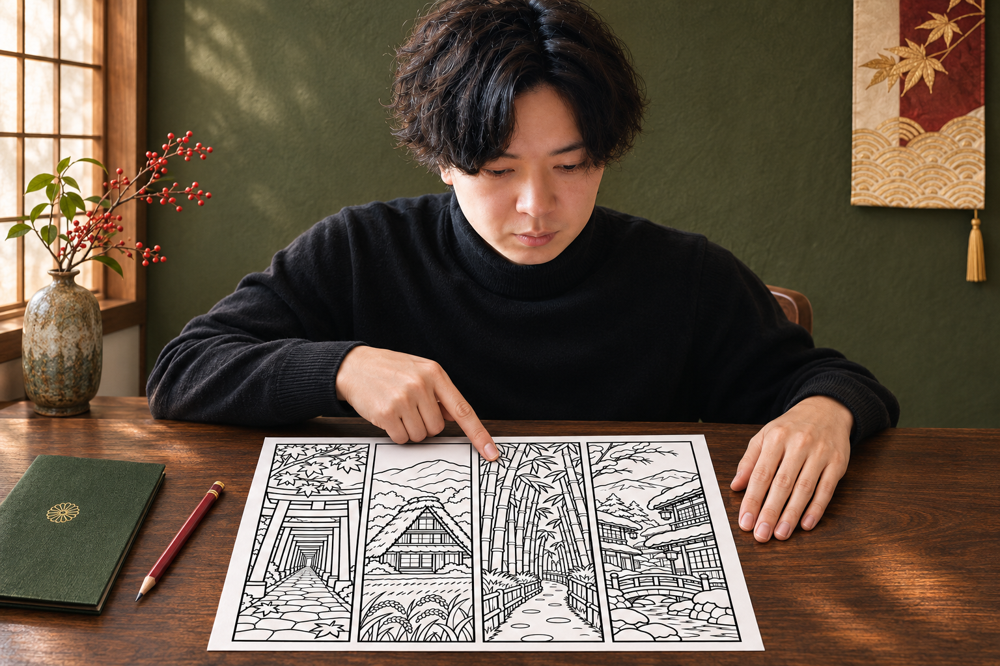
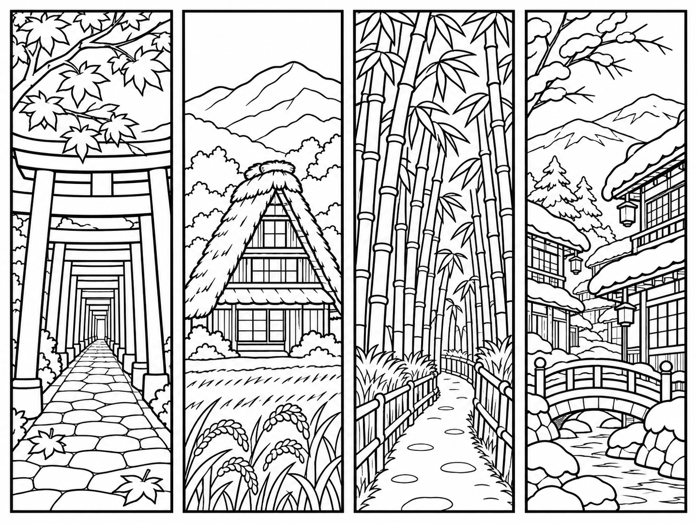
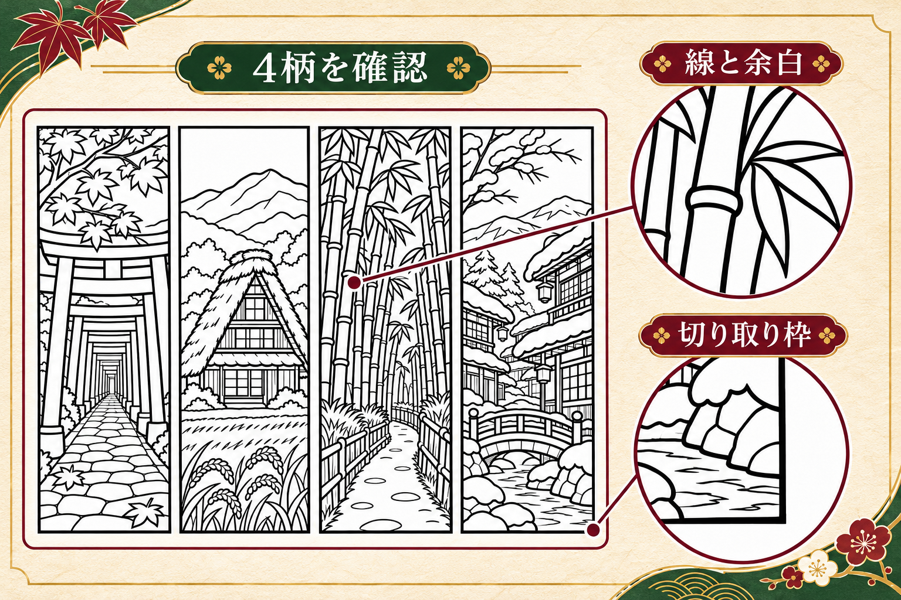
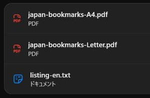
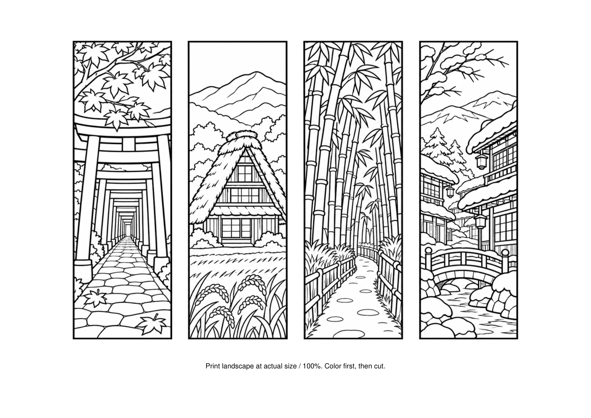
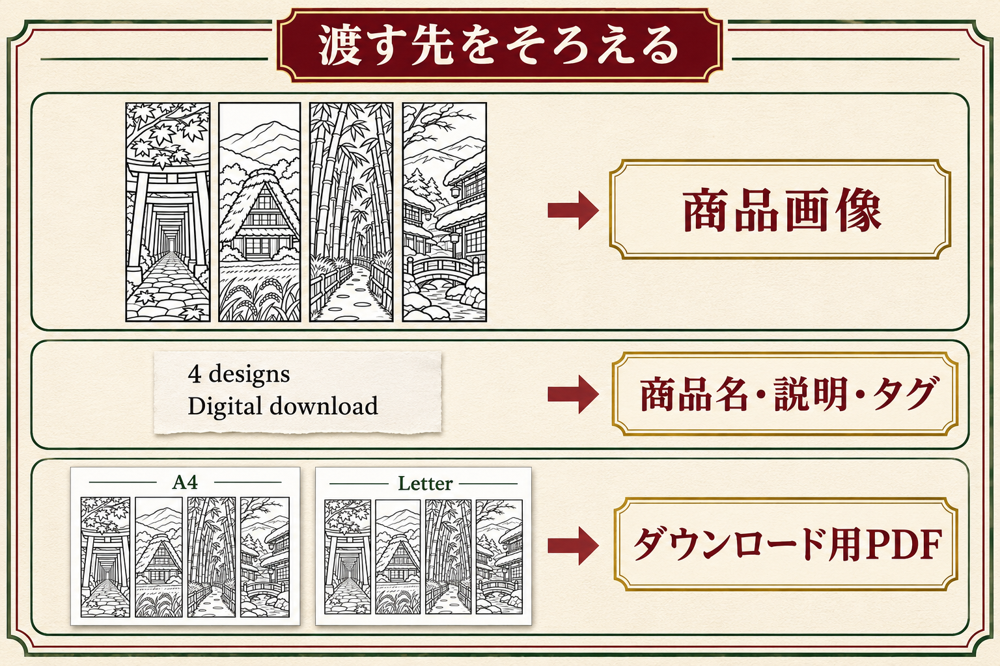
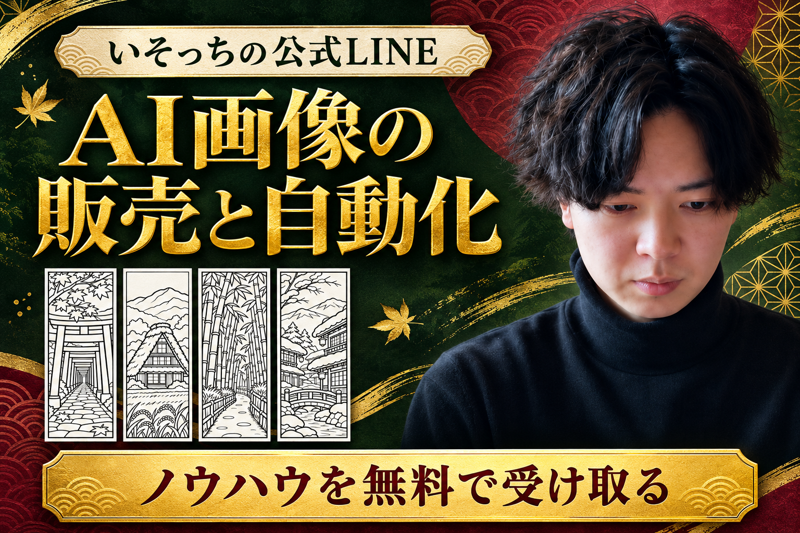

解説動画仮掲載
動画を大きく見る絵と英語で迷ったら、
まず1セット。
- 何を描けばいいか、決めきれない。
- 画像は作れた。英語の説明で手が止まる。
4柄を決めれば、画像・PDF・英語がひと続きに。出品に渡す1セットをそろえます。

僕は、日本らしい風景をおすすめしてます。鳥居の奥行き、茅葺きの屋根、竹の節。こういうところを残します。
 ChatGPT（チャッピー）
ChatGPT（チャッピー）01日本の4柄を決める

自分の柄を作るときは下の全文を、ChatGPTの新しい会話へ。題材を絞って頼みます。
自分の4柄を作る指示文
日本好きの人に向けた、印刷して色を塗るしおりの画像を1枚作ってください。 テーマは左から、秋の千本鳥居、合掌造りの家、竹林、雪の温泉街の4柄です。 横長4:3の白い画像に、縦長1:3のしおりを4本、間隔を空けて横一列に配置します。各しおりは独立した黒い長方形の切り取り枠で囲み、絵を枠からはみ出させないでください。 白地に黒い輪郭線だけ。色・グレーの陰影・黒いベタ塗り・文字・ロゴ・透かしは入れません。外枠はやや太く、内側は細い、印刷後に塗れる余白のある線画にしてください。 鳥居の連続と奥行き、合掌造りの急な茅葺き屋根、竹の節と葉、雪の積もる木造の温泉街が分かるようにします。特定の実在地を正確に描いたとは表示しません。 机や鉛筆の写真にせず、4柄の線画画像だけを生成してください。生成後は4本すべての外枠が欠けていないか確認してください。TXTで保存

4本の枠と、塗れる白い余白を見ます。崩れた箇所があれば、同じ会話でそこだけ直してください。
気になる箇所を直す指示文
この会話で作った塗り絵しおり画像の題材・4本の順序・白黒の線画を保ち、次の箇所だけ直してください。 【直す箇所】ここを、実際に気になる箇所へ書き換える。例：3本目の竹の節が途切れた部分を、自然につながる輪郭線へ直す。 問題のない部分を作り直さず、4本それぞれの黒い長方形の切り取り枠と、色を塗れる白い余白を残してください。色・グレーの陰影・文字は足さないでください。 対象の画像が会話にない場合は、画像の添付を求めてください。TXTで保存
02PDFと英語をそろえる
保存した4柄をChatGPTへ添付。下の全文を貼って送ります。PDFを作り、その仕様で英語もそろえます。
PDFと英語を作る指示文
添付したcoloring-master.pngだけを使い、塗り絵しおりのPDFと英語の出品原稿を作ってください。過去の会話やメモリ、他の作例は参照しません。公開・出品・購入・接続・ソフトのインストールはしないでください。 【今回の4柄】 左から、秋の千本鳥居、合掌造りの家、竹林、雪の温泉街。特定の実在地を忠実に描いたとは断定しません。 【先に作るPDF】 元の線画を描き直さず、4つの黒い長方形の外枠ごとに切り出して横一列に配置。各しおりの外枠を幅50mm・高さ150mmにします。余白は白。 A4横297×210mmとUS Letter横279.4×215.9mm、各1ページ。同じ4柄・同じ順序にしてください。案内は絵の外に英語で「Print landscape at actual size / 100%. Color first, then cut.」。 ファイル名はjapan-bookmarks-A4.pdfとjapan-bookmarks-Letter.pdf。実ファイルを渡し、開き直してページサイズ・ページ数・4柄・各外枠寸法・欠けの有無を確認してください。作れない場合は成功とせず理由を示してください。 【次に作る英語原稿】 PDF2点を渡す想定の、練習用Etsy出品原稿。商品名140文字以内、説明文、タグ13個（各20文字以内）。 説明文にdigital download / no physical item、4 designs、A4 + US Letter landscape PDF、50 x 150 mm each、actual size / 100%、color first then cutを含めます。 この練習作例の想定条件はpersonal use only / no redistribution or resale。AIを使って作成した線画と明記します。 手描き、300dpi、売上、効果、価格、送料、返品一律禁止、実在地の正確さを創作しないでください。 listing-en.txtの実ファイルも渡し、商品名とタグの文字数を確認してください。 画像がなければ添付を求め、作ったことにしないでください。今回は教材の練習作例で、販売実績として扱いません。TXTで保存


PDFは必ず開き直す。ここまでやってあげてください。印刷は横向き・100%です。
中身を確認・修正する指示文
この会話で作成したjapan-bookmarks-A4.pdf、japan-bookmarks-Letter.pdf、listing-en.txtを、添付した元の4柄と照合してください。ファイルが見当たらなければ添付を求め、未確認を合格にしないでください。 PDFはA4横297×210mmとUS Letter横279.4×215.9mm、各1ページ、同じ4柄・同じ順序、各外枠50×150mmです。4本の枠が欠けず、重なりがなく、英語の印刷案内が絵の外にあるかを確認してください。 英語原稿はPDF2点・4柄・50×150mm・横向き100%印刷・デジタル商品・現物発送なし・AI利用と一致するか確認。商品名140文字以内、13タグは各20文字以内。未提示の実績・効果・価格・300dpi・手描きは削除します。 問題のある箇所だけ直し、修正版を同名で混同しないよう末尾に-v2を付けて渡してください。問題がなければ修正不要と示してください。最後は自分でも各PDFを開き直します。TXTで保存
英語原稿の完成例
練習用の原稿です。自分の柄では、仕様と利用条件も合わせて変更します。
商品名
Japanese Coloring Bookmarks Printable PDF, 4 Designs, Torii Gates, Farmhouse, Bamboo and Snowy Town, A4 and US Letter
説明文
Printable Japanese scenery coloring bookmarks - a digital download practice listing. No physical item will be shipped. What's included - 2 PDF files: one A4 landscape page and one US Letter landscape page. - Both PDFs contain the same 4 designs in the same order: autumn torii gates, a gassho-style farmhouse, a bamboo grove, and a snowy hot spring town. - Each bookmark is 50 x 150 mm, including its black rectangular border. - The line art was created using AI. How to print and use 1. Choose the A4 or US Letter landscape PDF for your paper. 2. Print landscape at actual size / 100%. Do not select Fit to Page or scaling. 3. Color first, then cut along the black rectangular borders. Practice-use terms Personal use only. No redistribution or resale of the files or artwork. This text is a practice listing draft, not a live listing.
タグ
japan bookmarks coloring bookmarks printable bookmark japanese scenery torii gates bamboo grove snowy village farmhouse coloring coloring printable instant download a4 printable us letter pdf mindful coloring原稿をTXTで保存
自分の完成原稿をTXTで残す
確認した原稿を貼り、保存したTXTを開き直します。
保存名：my-listing-en.txt
03Etsyの下書きへ渡す

商品の種類はデジタルファイル。画像と原稿が合い、PDF2点が開けることを確認して下書きへ。
出品前に見る場所と条件
- Etsyのショップ管理から出品を作成。未開店なら、先に登録条件と手数料を確認します。
- 商品の種類で「Digital files」。作った人や制作方法は、自分の実態に合わせて回答します。
- 商品画像には、購入者へ渡す柄のプレビューを使います。英語原稿から商品名・説明文・タグをそれぞれ入力します。
- ダウンロード用にjapan-bookmarks-A4.pdfとjapan-bookmarks-Letter.pdfを添付。PNGのプレビューだけで終えません。
- AI利用を説明に記載。価格・通貨・カテゴリー・利用条件を決め、購入者に表示される中身と一致するか確認します。
- この教材は出品準備まで。公開前には本人が内容と料金を確認します。
デジタル出品は最大5ファイル、各20MBまで。今回のPDF2点はどちらも20MB未満です。
販売用は、自分で制作し権利を確認した柄にしてください。この4柄と原稿は練習用です。
一度通せたら、
夜の準備も任せる。
僕は寝る前に「これ朝までにやっといて」と頼んでます。まずは1セット。朝は画像もPDFも中身を見てからです。
夜に1セット任せる指示文
日本の風景の塗り絵しおりを、まず1セットだけ準備してください。今回は1回の実行で、繰り返しの予約や出品はまだしません。 使う画像はこの依頼に添付したcoloring-master.pngの4柄だけ。左から秋の千本鳥居、合掌造りの家、竹林、雪の温泉街です。画像がなければ添付を求めて止まってください。過去の会話や別の素材には依存しません。 1. 線画を描き直さず4本の黒い外枠ごとに切り出し、各50×150mmで横一列へ配置。A4横297×210mmとUS Letter横279.4×215.9mm、各1ページのPDFを作る。案内は絵の外へ「Print landscape at actual size / 100%. Color first, then cut.」。japan-bookmarks-A4.pdfとjapan-bookmarks-Letter.pdfとして渡す。 2. PDFと同じ4柄・同じ仕様の練習用英語原稿listing-en.txtを作る。商品名140文字以内、説明文、タグ13個（各20文字以内）。デジタル商品、現物発送なし、PDF2点、各50×150mm、横向き100%印刷、塗ってから切る、AI利用を明記。想定条件は個人利用のみ、再配布・再販売なし。価格・手描き・300dpi・実績・効果を足さない。 3. PDFを開き直し、用紙・1ページ・4柄の順序・寸法・枠の欠けを確認。英語原稿との食い違いがあれば直す。 最後に実ファイル3点、確認結果、未実施と要確認を短く報告してください。作れなかったものを完了にせず、朝に本人が中身を確認できる状態で止めます。 公開・出品・購入・アカウント接続・権限変更・インストールは行いません。TXTで保存
繰り返しにする前の確認
上の指示文は、今回の4柄を添付して1回だけ実行するものです。まず通常の会話で実ファイルを作り、保存まで試してください。
繰り返す場合は、Scheduledを使えるChatGPTの環境で設定します。指示文・参照素材・実行時刻を確認し、最初の数回の結果を見ます。WebのタスクはPCのローカルフォルダを直接使えません。ローカル素材を使うデスクトップのタスクは、PCとアプリを起動しておきます。
定時実行と、画像生成・PDF作成がその環境で通ることは別に確認します。対応しない工程を、完了したことにしません。
OpenAI公式：Scheduled tasksまず、1セット開けたらOK。
次は、自分の題材を1つ。新しい画像に合わせて、PDFと英語もそろえます。
教材と練習セットをまとめて保存ZIPを展開して「index.html」を開くと、PDF・指示文・英語原稿を使えます。
次は、この1セットの販売方法。
販売の進め方や、面倒な作業の自動化。続きのノウハウは、僕の公式LINEへ。
